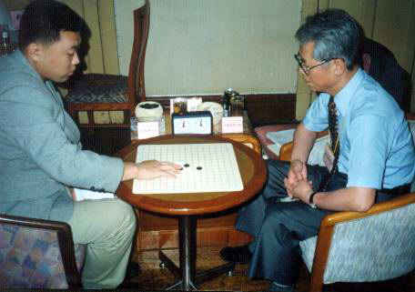
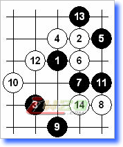
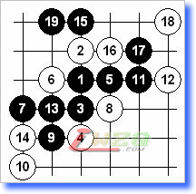
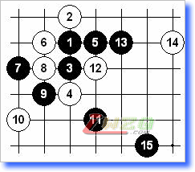

三森先生
#1 三森先生作者：有志青年 发表时间：2008-4-8 7:46:40

今日整理资料，偶尔发现几张旧照。这张是2002年5月，上海首届“经纬杯”赛上和三森先生的一局。这盘是第一次和九段对弈，加之三森先生之前成绩还不错，所以有点紧张。先生开名月基本在意料之中，不过那时对名、岚月之类的布局不是很熟悉，只知道一些基本的定式。

本局我当然交换执黑，白12、14是此前没有见过的防守。由于那届比赛是每方一小时包干制，在没看到明显胜机的情况下选择了控制局面的下法，白棋整盘没有机会，不过先生的防守还是很好的。临到结束时，有件小插曲。三森先生还有一分钟就要超时的情况下，我的时间还很充裕。并且我在上方有很多进攻的手段，但应该是无胜。老先生担心我听不懂日语提和，便拿了纸笔写了汉字的“和棋”两个字给我看，彼此遂握手言和。几年后，还是“经纬杯”上，石谷信一八段执白尝试这个变化，结果可想而知。
和三森先生第二次在“经纬杯”交手，已经是三年之后的事情了。那时，我已经公布了“松月”一打必胜，结果这盘我开松月，先生非但没有交换并且还给我留了一打，当时看了心里的确有点捣鼓。

看到他防这个12，悬的心基本安定了。这个变化我很熟，这盘我用时5分钟。局后问三森先生为什么选择这个变化，他说这个变化他胜不了，所以实战和我下看我如何对应。本想以后没机会和三森先生再下松月一打了，怎料想……
三度交手，在先生的试题下差点没及格。这次，依旧是松月，并且还是一打。赛后先生说这个变化他赛前准备过，并且还准备了不止一个松月一打的变化备用。

白14的防比较妖，我对这步防守一点没印象。由于比赛是一小时，一般情况下我习惯这种比赛要留半个小时余地。只能规定自己在半个小时内找到解决的方案。还好，苦算二十多分钟后发现了15的妙手，局后先生笑笑说“看了这个15就放弃了”。复盘的时候还给我摆了不少变化，让我受益匪浅。先生对于胜负的态度是淡然的，戏言自己下的是快乐连珠。
#2 Re:三森先生作者：nara 发表时间：2008-4-9 19:06:32
而象这种棋谱图的打开就没有什么问题